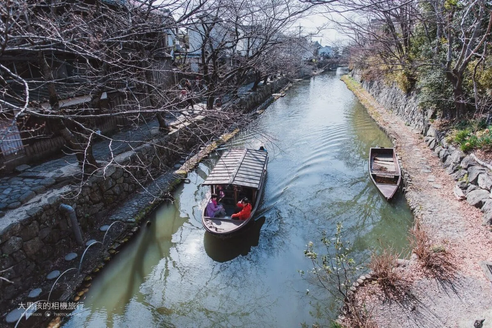

🚣 400 年水鄉手搖船 ✕ 日牟禮八幡宮 ✕ 吉卜力草屋頂 ✕ CLUB HARIE 現烤年輪滋賀・近江八幡江戶水鄉手搖船 ✕ 日牟禮八幡宮 ✕ La Collina 甜點草屋深度攻略
地理位置：滋賀縣近江八幡市（JR 近江八幡站搭公車 7 分鐘直達八幡堀）。
建議停留：3 ~ 3.5 小時（水鄉手搖船 35 分鐘 ＋ 日牟禮八幡宮與千成亭 40 分鐘 ＋ La Collina 1.5 小時）。
核心亮點：豐臣秀次 400 年水鄉 ✕ 《神劍闖江湖》手搖屋形船 ✕ 1900 年日牟禮八幡宮金色神鴿 ✕ 相機旅圖三大機位 ✕ 藤森照信草屋頂 ✕ 現烤溫熱年輪蛋糕 ✕ JR 新快速 55 分直達大阪。
📸 《相機旅圖》攝影師推薦三大黃金取景機位
近江八幡被稱為「日本的威尼斯」，遊客平日不算多，漫步在水道旁隨手一拍都是明信片！推薦攜帶廣角或標準變焦鏡頭捕捉以下三大黃金角度：
① 白雲橋上俯瞰（經典明信片）
焦段：24-35mm 廣角
從拱橋正中央往下拍，木製手搖遊船緩緩穿過橋洞，兩側垂柳拂水與江戶白壁土藏倒影形成絕美對稱。
② 沿岸石疊低角度（神劍闖江湖）
焦段：35-50mm 標準鏡
沿石疊步道走，壓低視角抓拍船夫搖櫓的俐落身段與水面微光漣漪，重現劍心水路決鬥的電影歷史感。
③ 新町通商人老街（古風透視）
焦段：50-70mm 中焦
捕捉重要傳統建造物群的黑漆板壁、細緻木格子窗與遠方日牟禮之森的深邃透視感，氣氛幽靜典雅。
📜 豐臣秀次商道傳奇、日牟禮八幡宮與共生綠建築
• 1585 年豐臣秀次開鑿「八幡堀」：豐臣秀吉外甥豐臣秀次引琵琶湖水注入護城河，規定「所有往來琵琶湖的商船必須進入八幡堀交易」，誕生了名揚全日本的「近江商人」。他們奉行「賣方好、買方好、社會好（三方よし）」的商道精神，成為日本近代商業文化的根基。
• ⛩️ 日牟禮八幡宮（1900 年古社 ✕ 金色神鴿）：建於西元 131 年，坐擁 4.4 萬平方公尺的大杉神木原生林，是近江商人世代信奉的總守護神。境內一對「金色神鴿雕像」象徵勝利與心願達成，盛夏林蔭濃密、氣氛神聖靜謐。
• 昭和時代拯救水鄉的居民運動：1970 年代八幡堀一度淤積發臭差點被填平成柏油停車場，當地居民自發發起長達數十年的清淤與石疊保存運動，讓八幡堀成為全日本第一個重要文化景觀，更是電影《神劍闖江湖 (るろうに剣心)》劍心乘船決鬥的取景舞台。
• 藤森照信的吉卜力草屋頂哲學：年造訪量超過 320 萬人的 La Collina，由建築大師藤森照信設計，屋頂全數覆蓋天然草皮，樑柱採用帶樹皮的天然栗木，中庭保留生生不息的水稻田，讓甜點王國與自然景觀完美融合。
🗺️ 順向四部曲探索動線指引 (不走回頭路)
從 JR 近江八幡站北口 6 號站牌搭近江鐵道巴士「長命寺線」約 7~10 分鐘至「新町」或「大杉町」下車，步行 1 分鐘登船：
・搭乘傳統有遮陽棚的手搖屋形船，在垂柳依依的清涼水道中悠緩穿梭。
・平視江戶石疊與白壁黑瓦土藏倉庫，聽船夫以長篙搖櫓水聲，重現《神劍闖江湖》電影中的江戶水鄉風華。
下船後步行 2 分鐘步入日牟禮八幡宮神聖參道：
・萬坪大杉原生林：漫步在盛夏幽涼的巨木林蔭中，享受身心洗滌的平靜氣場。
・金色神鴿雕像：參拜近江商人守護神，拍下象徵「心願達成・必勝」的成對金鴿。
穿過鳥居前往近江牛專門老舖「千成亭」：
・必吃「A5 炙燒近江牛握壽司」：表面微火炙燒逼出甜美油花，搭配現磨山葵與醬油，入口即化。
・必點現炸「金牌近江牛可樂餅」，外酥內嫩肉汁滿溢。
搭公車 5 分鐘抵達日本第一甜點王國 La Collina：
・穿過矮木門拍整座草皮綠屋頂主館與中庭水稻田木棧道（下午斜射光最美）。
・直奔 2 樓景觀咖啡廳，享用 CLUB HARIE 現烤溫熱年輪蛋糕 (焼きたてバームクーヘン) ＋ 冰牛奶。
・逛「銅鑼燒館」品嚐現做生銅鑼燒、採買精緻伴手禮禮盒。
從 La Collina 搭公車回 JR 近江八幡站，搭乘 17:35 的「JR 新快速」列車，55 分鐘免轉車一路直達 JR 大阪站，直接搭電梯回 大阪梅田站直結基地 飯店放戰利品！
💬 社群旅人實戰評價精選
「近江八幡平日遊客不多，水道兩側古街保存完好。搭乘有棚的屋形船在八幡堀緩慢遊覽，再漫步到日牟禮八幡宮萬坪森林尋找金色神鴿，下午在 La Collina 吃剛出爐的溫熱年輪蛋糕配冰牛奶，整個午後時間彷彿慢了下來，隨手一拍都是明信片！」—— 《相機旅圖》實地手記
相機旅圖 — 近江八幡水鄉散策攝影攻略（八幡堀/日牟禮八幡宮/La Collina）